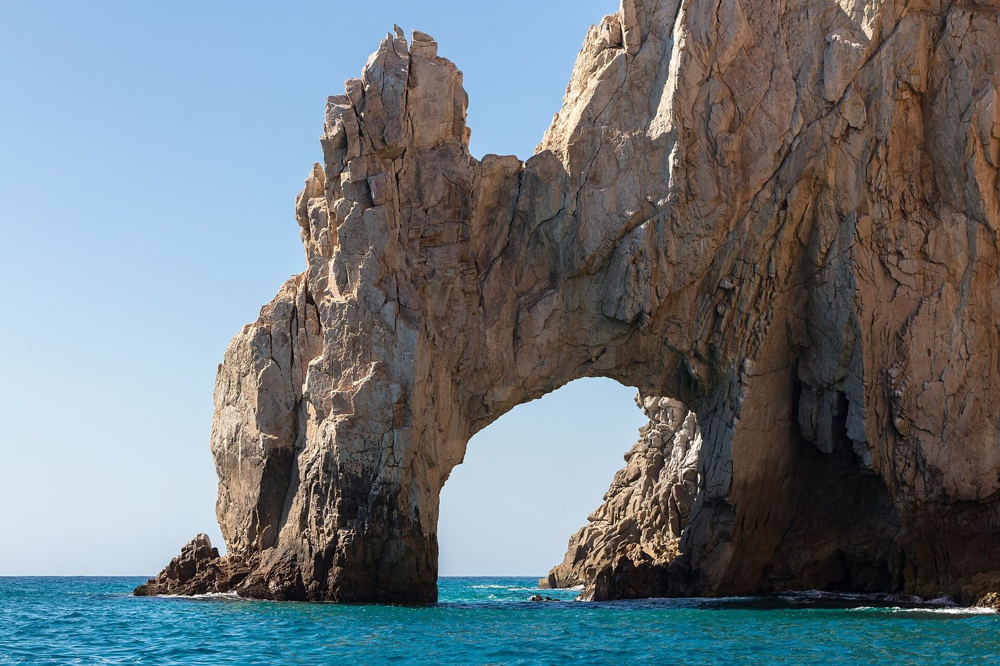
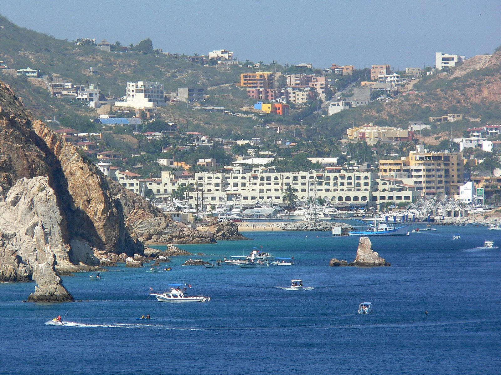
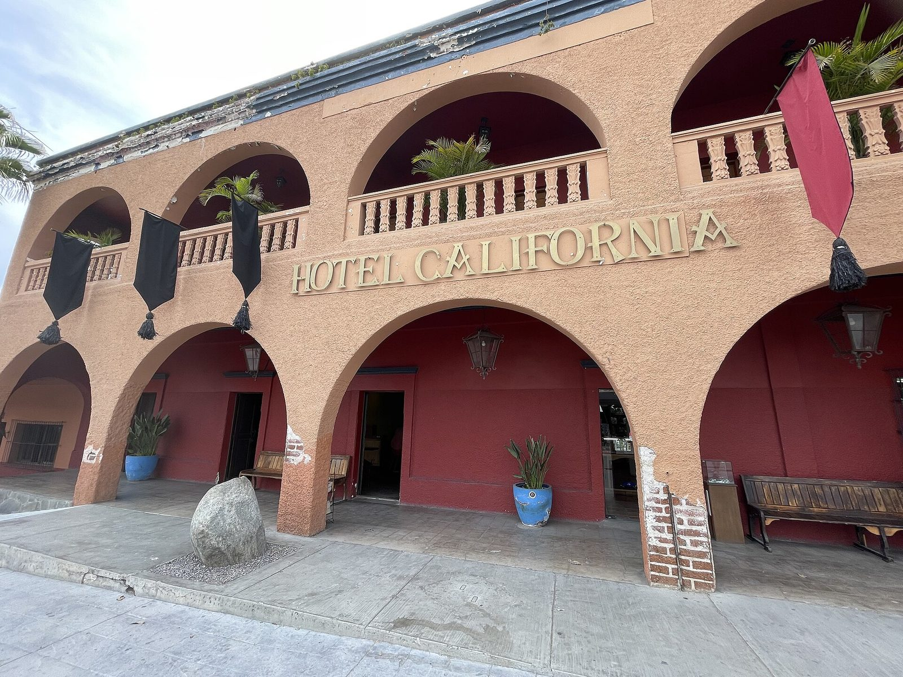

Arrive
Short flight (~4.5hrs), settle into your resort.
Desert-meets-ocean glamour — dramatic cliffs, upscale resorts, marina nightlife, easy day trips to quieter beach towns. Feels more like a polished resort escape than an immersive cultural trip. 7 days on the ground, about 8 door-to-door.


Shoulder: mid-to-late October (drier, lower hurricane risk, much more comfortable).
Peak/riskier: July–September, technically Baja's hurricane season — low but non-zero risk, and September is the most humid month.
Push this one toward late October specifically — the risk and humidity both drop noticeably by then.
Both marquee properties here have gotten noticeably pricier than a quick glance suggests — Waldorf Astoria Pedregal and One&Only Palmilla now both run $1,500+/night, which alone blows past $7,500 for a week. A well-reviewed all-inclusive like Hyatt Ziva (~$600/night, meals and drinks bundled in) keeps a full week plus excursions to around $5,000.
Warm and humid but far less oppressive than peak summer.
Short flight (~4.5hrs), settle into your resort.
Iconic rock arch, snorkeling.
Recommended: Kelly Boat Club, El Arco + Lover's Beach ↗Seasonal check needed for whale watching.

Bohemian art town, an hour from Cabo, a nice change of pace from resort life.
Spa.
Santa Maria or Chileno Bay.
Last night out.
Fly home.
Meals and drinks bundled into the rate — the value pick that keeps this destination affordable.
Cliffside, tunnel-access private cove. Recently rebranded from The Resort at Pedregal — rates jumped accordingly.
San José del Cabo side, original Los Cabos ultra-luxury property.